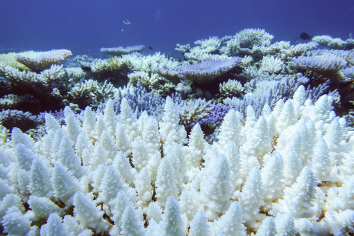

Enjeux du corail
Utilité
Les coraux sont des barrières naturelles contre les vagues géantes et les tsunamis. C'est pourquoi il est très important de les protéger du réchauffement climatique.
Les coraux menacés
En effet une nouvelle étude américaine montre que les récifs coralliens du monde entier mourront de thermostress et de ce fait auront totalement disparus en 2050 si les émissions de carbone ne diminuent pas suffisament.
Par exemple depuis 1998, 98% de la surface de la grande barrière de corail australienne a été touché par des épisodes de blanchissement.
En résumé
La disparition du corail aura un inpact majeur sur les villes d'eaux mondiales. Il est une barrière naturelle préventive contre les catastrophes aquatiques. Nous pouvons donc nous attendre à des multiplications de ces dernières si rien n'est fait pour les préserver.